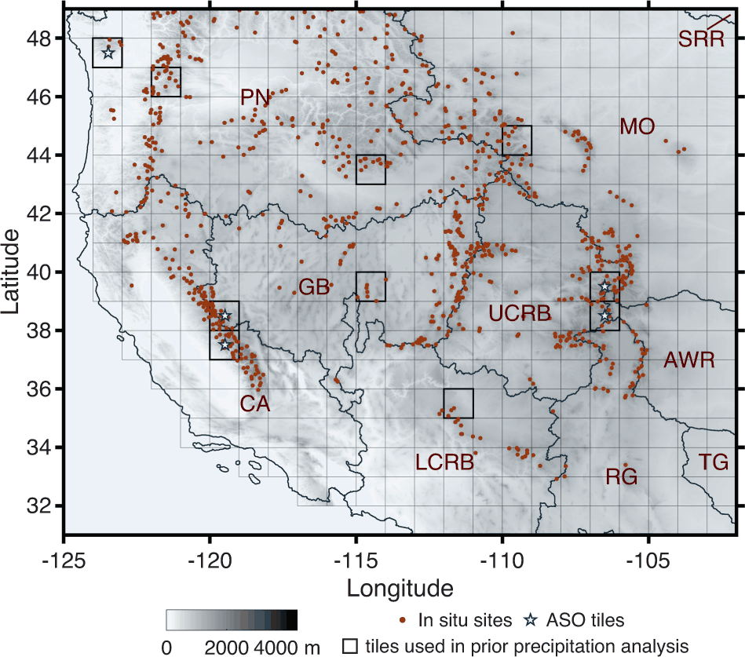

Research
How much water is held in the world's mountains, and how confidently do we know it? That question organises the programme. It sits between land-surface hydrology, microwave remote sensing, and machine-learning systems engineering.
Primary
LLM agents for hydrological workflow automation
Modular agent layers — acquisition agents that retrieve and quality-screen forcings, land cover, DEMs and in-situ records from NSIDC, Copernicus and elsewhere; modelling agents that configure, execute, calibrate and quantify uncertainty in physics-based snow and hydrology models; analysis agents that produce publication-grade results. RSHub is the architectural prototype and the proven deployment path.
Next-generation snow reanalysis and satellite retrievals
Extending assimilation to Sentinel-1, LuTan-1 and NISAR InSAR phase change as a direct constraint on snow water equivalent; neural emulators trained on the published long-term reanalysis records; continued collaboration with the Chinese Academy of Sciences on field infrastructure and ground truth.
Exploratory
Cryosphere science for socioeconomic and ESG risk
Physically-based flood-deluge and snowmelt-runoff indices as inputs to financial risk models, linking cryosphere change to corporate flood exposure and infrastructure resilience.
Case study — Snow Reanalysis

The problem. No satellite measures snow water equivalent directly at the scale mountains actually vary. What satellites see reliably is fractional snow-covered area — where snow is, not how much. During melt, though, the rate at which a pixel sheds its cover encodes how much water was there: deeper snow takes longer to disappear.
The approach. Generate a large prior ensemble by driving a coupled land-surface and snow-depletion model with perturbed meteorological forcings and parameters, then condition that ensemble on Landsat- and MODIS-derived fSCA with a particle-batch smoother. The posterior is a daily, 480 m, physically consistent estimate that carries its own uncertainty — which matters as much as the mean.
- Domain
- Western United States and High Mountain Asia; extended to Altay, Xinjiang
- Resolution
- 480 m, daily, water years 1985–2021 — the longest fine-resolution snow record for the region
- Method
- Bayesian ensemble data assimilation; particle-batch smoother on Landsat/MODIS fSCA
- Archive
- NASA NSIDC DAAC — 10.5067/PP7T2GBI52I2 · 10.5067/HNAUGJQXSCVU
- Downstream
- Water management, ML training and benchmarking, wolverine denning habitat, snowmelt–radiation feedbacks on streamflow, California snowline projections
- Next
- 150 m Altay SWE (2018–2025); InSAR phase difference as a second independent constraint
What it enabled. Beyond the datasets, the framework let us map where snow-storage uncertainty concentrates across the midlatitude American Cordillera, test how well global snow products characterise High Mountain Asia, establish how few snow-depth images are needed for continuous SWE estimation, and evaluate ESA's Snow CCI product from inside a reanalysis.
Teaching and mentoring
I have advised more than a dozen undergraduate and graduate students at Zhejiang University and UCLA. The 2025 summer cohort produced the RSHub 2.0 manuscript.
Invited lecture
2024 · Zhejiang University
Frontier Engineering Technology series: snow remote sensing and data assimilation.
Teaching assistant
2018–2022 · UCLA
Applied Numerical Analysis & Modeling; Introduction to Hydrology.
Summer student programme
2025 · Zhejiang University
Five undergraduates on LLM agents for geophysical modelling.
RSHub student project
2024–2025 · Zhejiang University
Four undergraduate and four graduate researchers.
Undergraduate thesis
Spring 2025 · Zhejiang University
One thesis student supervised to completion.
Directed research
Spring 2019 · UCLA
C&EE 199 senior research project.